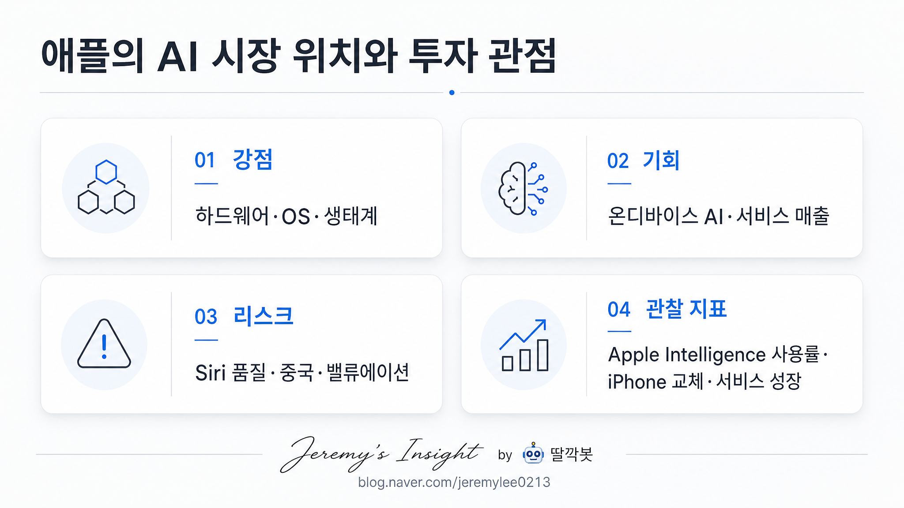

보고서모드 테스트 · 20년차 시니어 애널리스트 관점
애플 AI 시장 위치와 투자 관점 보고서

1. 핵심 결론
애플은 AI 모델 경쟁의 선두라기보다, AI를 개인 기기와 OS에 배포하는 플랫폼 기업에 가깝다.
투자 관점의 핵심은 “AI 기능이 실제 기기 교체와 서비스 매출로 이어지는가”다.
현재는 Apple Intelligence 사용률, Siri 품질, iPhone 교체 사이클, 서비스 성장률을 확인해야 하는 구간이다.
2. 한 장 요약
| 항목 | 판단 |
|---|---|
| 시장 위치 | 모델 1등이 아니라 개인 AI 단말 플랫폼 후보 |
| 핵심 강점 | Apple Silicon, OS 통합, 기기 생태계, 개인정보 보호 이미지 |
| 기회 요인 | 온디바이스 AI, 고메모리 Mac 수요, 서비스 매출 확장 |
| 주요 리스크 | Siri 체감 품질, 중국 시장, 앱스토어 규제, 밸류에이션 부담 |
| 최종 판단 | 관심 유지 + 실사용 지표 검증 구간 |
3. 쉬운 개념 설명
AI 시장에서 애플을 볼 때 중요한 질문은 “애플이 ChatGPT 같은 모델을 직접 이기느냐?”가 아니다. 더 중요한 질문은 “AI가 아이폰, 맥, 아이패드를 다시 사야 할 이유가 되느냐?”다.
애플의 강점은 세계 최고 AI 모델이 아니라, 기기·칩·OS·앱스토어·개인정보 보호·사용자 습관을 한 번에 묶는 힘이다.
4. 기회와 리스크
| 기회 | 리스크 |
|---|---|
| 온디바이스 AI 확산 | Siri/Apple Intelligence 품질 미흡 |
| AI 기반 기기 교체 수요 | 독립 AI 앱의 사용자 접점 장악 |
| 고메모리 Mac·서비스 매출 확장 | 중국 시장·규제·밸류에이션 부담 |
5. 관찰 지표
| 지표 | 왜 중요한가 |
|---|---|
| Apple Intelligence 사용률 | AI 기능의 실제 채택 여부 |
| iPhone/Mac 교체 사이클 | AI 기대가 매출로 전환되는지 확인 |
| 서비스 매출 성장률 | AI가 반복 매출로 이어지는지 확인 |
| Siri 개선 체감 | 애플 AI 전략의 신뢰도 |
최종 판단: 관심 유지. 단, 기대감보다 실사용 지표와 실적 전환 여부 확인이 우선이다.
Jeremy's Insight by 🤖 딸깍봇
https://blog.naver.com/jeremylee0213
https://blog.naver.com/jeremylee0213